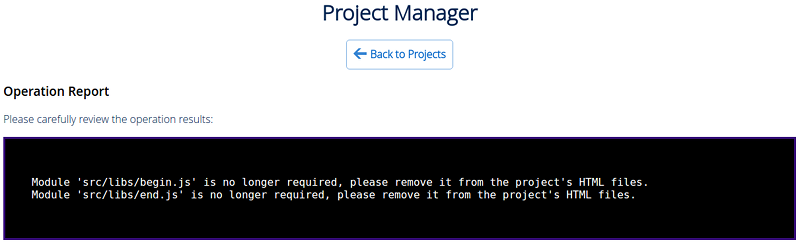
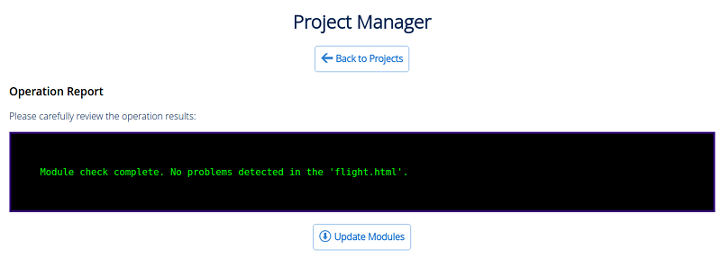

Project Management¶
Table of Contents
Since version 15.09, the SDK includes a project management feature, which makes it possible to:
- browse the full list and file structure of the projects;
- launch apps, run exported scenes in the Viewer, open source blend files in Blender;
- create and configure new apps, including those based on ready-made templates;
- build apps and pack them to be conveniently deployed on a remote server;
- convert app resources (textures, audio and video files) into alternative formats to ensure cross-browser and cross-platform performance;
- automatically re-export all scenes of an app, including export to JSON and HTML formats;
- remove projects.
Project Manager¶
The Project Manager app can be run from the Tools section of the SDK’s index page. Upon launching, the app outputs a list of all current projects in the SDK.
The commands for project management are located at the top of the page.
{kind=link}
- Back to Index
- Returns to the Blend4Web SDK index page.
- Create New Project
- Opens the project creation wizard.
- Import Project(s)
- Opens the project import dialogue.
- Export Project(s)
- Opens the project export page.
- Hide Stock Projects
- Can be used to hide stock projects. If such projects are already hidden, this command is replaced with the
Show Stock Projectscommand. - Help
- Opens the Help file.
Commands for managing a specific project is located at its right.
Note
Some commands may not be available depending on the type of the project.
Build project (not available for Web Player JSON and Web Player HTML projects).
Check for missing or unnecessary API modules (not available for Web Player JSON and Web Player HTML projects).
Activating this option will make the Project Manager check the modules used by the application and output the results of the check to the console. Possible warning messages are listed below:
- If one or more API modules are missing from the project’s folder, the following message will be displayed:
Module `module_name` is missing in the `project_name.html` project, please include it or run `Update Modules`.

These missing modules can be appended to the project with the
Update Modulesbutton.- If the project has one or more API modules that are not used anywhere in the program code, the following message will be displayed:
Incorrect module `module_name` in the `project_name.html`, please remove it or run `Update Modules`.
These incorrect modules can be removed from the project with the
Update Modulesbutton.- In case no problems with missing/unnecessary modules have been detected, the following message will be displayed:
Module check complete. No problems detected in the `module_name.html`.
Re-export blend files from the project.
Export and download a project archive.
Remove the project.
Note
All project paths are retrieved from its .b4w_project file.
Beside the project’s name, a link to the project information page is located. The application type is also specified there. An application can have one of the following types:
- Player
- The application can be played using the Web Player.
- Dev
- Application for development.
- Build
- Compiled application.
Project Creation Wizard¶
The tool for creating new projects is included in the Project Management app and executed by the [Create New Project] button on the main page of this app.
{kind=link}
The [Back to Projects] button can be used to return to the Project Manager’s main page, while the [Help] button can be used to access the Help file.
Project name is used to name project directories such as “apps_dev/project_name”, “deploy/assets/project_name”, “blender/project_name” and “deploy/apps/project_name”.
Project title as shown in the browser.
Project author’s name.
Add application templates. Standard application templates: html file, css file, js file will be added to the project directory “apps_dev/project_name”.
Add scene templates. Standard json file will be added to the “deploy/assets/project_name” directory; blend file will be added to the “blender/project_name” directory.
Use Material Library. Blend files of the material library will be copied to the project directory “blender/project_name”, while the asset files will be copied to “deploy/assets/project_name” folder.
Copy project manager script. The project.py script will be copied to the project directory.
All project files will be located in the same directory. It is preferable to use this option in small projects, such as lessons and examples. Only
Web Player JSONandWeb Player HTMLproject types are available for this option.Project’s type. Several options are available:
External- Project Manager will use engine files in thedeploy/apps/common/directory to run the project.When the project is deployed, only application files will be compiled, while the
deploy/apps/common/folder will be copied to the project directory.Use this option if you don’t need to change engine files in any way;
Copy- engine files will be directly copied from thedeploy/apps/common/to the application folder.When the project is deployed, only application files are compiled, while engine files are left intact (so you cannot modify the engine itself);
Compile- engine sources are compiled with application scripts.This option can be used to modify the code of the engine itself;
None- Project Manager will not copy the engine files to the application folder, nor will it perform any operations upon building the application. Application developers will have to manually perform everything they need;Web Player JSON- json-file placed inside the project is run with the help of web-player inside SDK;Web Player HTML- project is packed into single html-file, containing all required resources.
Javascript optimization level.
- “Simple” - variable names are replaced in the code;
- “Advanced” - code optimization is performed;
- “Whitespace Only” - only whitespaces are removed from the code.
- Web Player URL attributes. This tab is available only if
Engine Binding Typeparameter is set toWeb Player JSONorWeb Player HTML.- “Show FPS” is used to display the FPS counter in the player’s top right corner.
- “Auto-rotate camera” enables automatic camera rotation just after the scene loads.
- “Disable social network buttons” disables social networks buttons on the control panel.
- “Background transparency” enables transparency for the rendering area.
- “Use compressed textures” enables loading of minified and compressed textures (in DDS format).
Creating a Web Player Application¶
The main advantage of Web Player applications is the ease of deploying such applications on a website.

Creating a Web Player application is simple. All you have to do when creating a new project is select the Web Player JSON or Web Player HTML option under the Engine Binding Type tab.
The parameters that are available for a Web Player project are mostly the same as for any other type of project. The only exception is the group of parameter known as the Web Player Params.
Project Settings¶

This panel is only available if the Web Player JSON or Web Player HTML option has been enabled. The parameters listed here are in essence URL attributes that the Web Player application will use while running the project.
Deploying the Project¶
After you have completed your project, select the deploy project option from the Operations panel on the Project Manager main page. The project will be exported, packed into a single archive and downloaded to the folder where your web browser stores all dowloaded files.
To place the project on a webpage, you have to extract this archive and upload its files (the html file and the assets directory) to a web server using FTP, SSH or any other protocols supported by the server.
Note
The internal structure of the archive and relative paths to its files should be retained after uploading the project files to a web server.
A Web Player HTML application can then be placed on any webpage by using an iframe container.
Here is an example of HTML code that can be used for this:
<!DOCTYPE html>
<html>
<head>
<title>An Example Application</title>
</head>
<body>
<iframe width="800" height="500" allowfullscreen src="/tutorials/examples/web_page_integration/example_scene.html"></iframe>
</body>
</html>
Deploying a JSON project is performed similarly, but instead of a single HTML file it uses a combination of the Web Player app and a JSON file that contains the actual scene.
<!DOCTYPE html>
<html>
<head>
<title>Another Example Application</title>
</head>
<body>
<iframe width="800" height="500" allowfullscreen src="/apps/webplayer/webplayer.html?load=/tutorials/examples/web_page_integration/example_scene.json&show_fps"></iframe>
</body>
</html>
Project Information¶
This page contains information regarding the selected project and can be viewed by the [info] link beside the project’s title.
{kind=link}
Project Parameters¶
- Project Name
- The name of the project.
- Project Title
- Project title as shown in the browser.
- Project Author / Company
- The name of the project’s author or the title of the developer company.
- Project Icon
- The icon of the project.
- Applications
- Project applications.
- Engine Binding Type
- The type of the project.
- Project Path (Development Directory)
- Project’s directory.
- Project Config
- Project’s config file.
- Build Directory
- Project build directory.
- Blend Directory(s)
- Directories where project’s blend files are located.
- Assets Directory(s)
- Directories where project’s media assets are located.
- URL Params
- The list of URL parameters used to start the application.
- JavaScript Obfuscation Level
- JavaScript optimization level.
- JS Compilation Pass-Through List
- The list of pass-through exceptions for the project’s JavaScript files compilation.
- CSS Compilation Pass-Through List
- The list of pass-through exceptions for the project’s style sheets compilation.
- Build Ignore List
- The list of exceptions for project’s builds.
- Deployment Assets Directory
- Directory where assets will be placed for deployed project.
- Deployment Assets URL Prefix
- URL path prefix to assets directory inside deployed project as reported by get_std_assets_path().
- Deployment Ignore List
- The list of exceptions for project’s deploy.
Project Editing¶
A simple web-based interface for editing project files is available by the [edit] link beside the project’s title.
{kind=link}
The left part of the editor window contains a list of all .html, .css and .js files from the project directory (./apps_dev/<project_name>), starting with the main project file .b4w_project. The right part contains the content of a currently selected project file (no file is selected by default) with highlighted syntax.
Note
This interface can only be used to edit files from developer version of a project, but not from the builded version.
The Save File button that can be found at the bottom of the page is used for saving currently selected project file.
Project Import¶
Tools for importing projects are available by the [Import Project(s)] link.
Clicking this link opens standard Open File dialog where you can select the project you need to import.
Project Export¶
Project exporting window can be accessed by the [Export Project(s)] link.
{kind=link}
Commands¶
- Back to Projects
- Returns to the Project Manager’s main page.
- Hide Stock Projects
- Hides stock projects. If such projects are already hidden, this command is replaced with the
[Show Stock Projects]command. - Help
- Shows the Help page.
- Export Project(s)
- Can be used to export selected projects.
Project Parameters¶
- Select
- Shows if the project is selected for export.
- Name
- The name of the project’s directory.
- Title
- Project’s title.
- Author
- Project author’s name.
- Archive Name
- The name of an archive to which exported projects are packed.
Advanced Project Management¶
Advanced project management is used by experienced developers which require more flexibility and need to automate process of project development.
For advanced project management use the project.py script and manually edit .b4w_project configuration files.
The project.py script can be found in the ./apps_dev/ folder of the Blend4Web SDK directory.
Dependencies¶
The project management system works in all operating systems. However, some operations can require installing additional dependencies. In order to check whether all dependencies are met, use the following command:
./project.py check_deps
For MS Windows users:
python project.py check_deps
For script operation it’s required to install java and set the PATH system variable.
Note
Java is included by default in the Windows version of the SDK. In Linux and macOS it should be installed manually.
Resource Converter also uses its own set of external tools that are described in another section.
Projects List¶
The list of all projects in the SDK can be viewed with the following command:
python3 project.py -p myproject list
Project Structure¶
A typical app developed using the project manager looks as follows:
blend4web/
apps_dev/
myproject/
project.py
.b4w_project
myproject.js
myproject.css
myproject_dev.html
blender/
myproject/
myproject.blend
deploy/
apps/
myproject/
myproject.js
myproject.css
myproject.html
assets/
myproject/
myproject.json
myproject.bin
This app consists of 4 different directories.
- apps_dev/myproject. Contains source files of project’s apps.
- blender/myproject. Contains source files of project’s scenes.
- deploy/assets/myproject. Contains exported files of project’s scenes.
- deploy/apps/myproject. Contains exported files of project’s scenes.
Additionally, the deploy command can create yet another directory, but it’s usually placed outside of the SDK and its name and path depend on directory structure on the target server.
Project Configuration File (.b4w_project)¶
Project configuration file includes all necessary information of your project, including name, metadata, directories, info for application building and deployment.
[info]
author = Blend4Web
name = myproject
title = MyProject
icon =
[paths]
assets_dirs = deploy/assets/myproject;
blend_dirs = blender/myproject;
blender_exec = blender
build_dir = deploy/apps/myproject
deploy_dir =
[compile]
apps =
css_ignore =
engine_type = external
ignore =
js_ignore =
optimization = simple
use_physics =
use_smaa_textures =
version =
[deploy]
assets_path_dest = assets
assets_path_prefix = assets
ignore =
override =
This is a standard INI configuration file, which includes sections, properties and values.
Section [info]¶
Contains project metadata:
- author
- The name of the project’s author or the title of the developer company.
- name
- The name of the project.
- title
- Project title as shown in the browser.
- icon
- The icon of the project.
Section [paths]¶
Containts project paths:
- assets_dirs
- Directories where project’s media assets are located.
- blend_dirs
- Directories where project’s blend files are located.
- blender_exec
- Path to Blender executable.
- build_dir
- Project build directory.
- deploy_dir
- Project deployment directory.
Section [compile]¶
- apps
- Project applications.
- css_ignore
- The list of pass-through exceptions for the project’s style sheets compilation.
- engine_type
- The type of the project.
- ignore
- The list of exceptions for project’s builds.
- js_ignore
- The list of pass-through exceptions for the project’s JavaScript files compilation.
- optimization
- JavaScript optimization level.
- use_physics
- Indicates whether your project will use physics or not. Default - use physics.
- use_smaa_textures
- Indicates whether your project will use SMAA textures or not. Currently unused.
- version
- Project version.
Section [deploy]¶
- assets_path_dest
- Directory where assets will be placed for deployed project.
- assets_path_prefix
- URL path prefix to assets directory inside deployed project as reported by get_std_assets_path().
- ignore
- The list of exceptions for project’s deploy.
- override
- Replace existing output directory during deployment phase. Use with caution.
Section [url_params]¶
Optional section for Web Player projects. Contains URL params used to start project applications.
Creating a Project¶
./project.py init myproject
This command will create a project with the specified name in the current directory. By default the project directory will only contain a config file.
Available parameters:
-A | --copy-app-templates(optional) create standard app templates in the project directory (<my_project_name>_dev.html, <my_project_name>.js, <my_project_name>.css).-B | --bundle(optional) all project files will be placed in a single directory.-C | --author(optional) write an author’s or a company’s name in the config file.-o | --optimization(optional) write the script optimization level in the config file.-P | --copy-project-script(optional) create a copy of the project.py script in the project directory.-S | --copy-scene-templates(optional) create standard scene templates in the directoriesdeploy/assets/<my_project_name>andblender/<my_project_name>(<my_project_name>.json/.bin and <my_project_name>.blend correspondingly).-T | --title"(optional) write a title in the config file. Upon building, it will be used inside the<title>HTML element.-t | --engine-type(optional) write an engine type in the config file.
Example:
./project.py init -AS -C Blend4Web -o simple -T MyProject -t external myproject
This command will create a directory named myproject, inside which the following files will be placed: myproject.js, myproject.css, myproject_dev.html and .b4w_project.
The .b4w_project file will look like:
[info]
author = Blend4Web
name = myproject
title = MyProject
icon =
[paths]
assets_dirs = deploy/assets/myproject;
blend_dirs = blender/myproject;
blender_exec = blender
build_dir = deploy/apps/myproject
deploy_dir =
[compile]
apps =
css_ignore =
engine_type = external
ignore =
js_ignore =
optimization = simple
use_physics =
use_smaa_textures =
version =
[deploy]
assets_path_dest = assets
assets_path_prefix = assets
ignore =
override =
Developing multiple apps inside a project¶
A project can contain multiple apps. This can be provided by listing the corresponding HTML files in the config file separated with semicolon:
...
[compile]
apps = myapp1;myapp2;
...
Building Projects¶
python3 project.py -p myproject compile
Builds a project in the deploy/apps/myproject directory.
Available parameters:
"-a | --app"(optional) specify an HTML file, relative to which the project app will be built."-c | --css-ignore"(optional) add CSS styles to exceptions in order to not compile them."-j | --js-ignore"(optional) add scripts to exceptions in order to not compile them."-o | --optimization"(optional) specify the optimization level for JavaScript files:whitespace,simple(by default) oradvanced."-t | --engine-type"(optional) define a compilation type for an app. Four variants are available: external (by default), copy, compile, update."-v | --version"add version to paths of scripts and styles.
Compiler Requirements
- In the root of the directory the single html file must be stored if
-aoption is disabled - Scripts and styles can be stored in the app’s root and in the subfolders
Automatic Blend File Export¶
python3 project.py -p myproject reexport
This command will re-export blend files in JSON and HTML formats.
Available parameters:
"-b | --blender-exec"path to the blender executable."-s | --assets"specify directory with scene assets.
Resource Conversion¶
python3 project.py -p myproject convert_resources
Converts external resources (textures, audio and video files) into alternative formats to ensure cross-browser and cross-platform performance.
Available parameters:
"-s | --assets"specify directory with scene assets.
Converting of resources is described in detail in the corresponding section.
Deploying Projects¶
python3 project.py -p myproject deploy DIRECTORY
Save a project to an external directory together with all dependencies.
Available parameters:
"-e | --assets-dest"destination assets directory (“assets” by default)."-E | --assets-prefix"assets URL prefix (“assets” by default)."-o | --override"remove directory if it exists."-s | --assets"override project’s assets directory(s)."-t | --engine-type"override project’s engine type config.
Remove Project¶
python3 project.py -p myproject remove
Removes a project. Removed directories are retrieved from project configuration file.
Upgrading Apps for New SDK Versions¶
While upgrading for new SDK versions often two problems arise:
- Modules of the new and old versions of the engine do not match.
- Old and new engine API do not match.
In order to update the list of modules imported in developer version of application go to project source directory apps_dev/my_project and execute module list generator script:
python3 ../../scripts/mod_list.py
For MS Windows users:
python ..\..\scripts\mod_list.py
Note
To run the scripts the Python 3.x needs to be installed in your system.
The console will print the list of modules - copy them and paste into the main HTML file:
<head>
<meta charset="UTF-8">
<meta name="viewport" content="width=device-width, initial-scale=1, maximum-scale=1">
<script type="text/javascript" src="../../src/b4w.js"></script>
<script type="text/javascript" src="../../src/anchors.js"></script>
<script type="text/javascript" src="../../src/animation.js"></script>
<script type="text/javascript" src="../../src/assets.js"></script>
<script type="text/javascript" src="../../src/batch.js"></script>
<script type="text/javascript" src="../../src/boundings.js"></script>
<script type="text/javascript" src="../../src/camera.js"></script>
. . .
</head>
To eliminate API incompatibilities you may require refactoring of your app. All changes are described in release notes.